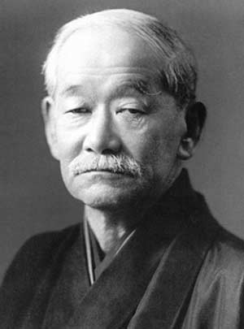

 История возникновения и развития дзюдо По принятой в Японии классификации, дзюдо относится к современным боевым искусствам. Борьба дзюдо была создана профессором Дзигоро Кано. В 1882 году Кано открыл в Токио первую школу дзюдо «Кодокан». Через год им была создана система разрядов, а в 1887 году была окончательно сформирована техника дзюдо. Первый чемпионат мирового уровня прошел в Токио 1956 году, после чего соревнования такого масштаба стали проводится регулярно и не только в Японии. На протяжении долгих лет в дзюдо не существовало весовых категорий. Как считали сами японцы, главное – это не сила, а искусство владения тайной техникой. Но после поражения японцев на четвертом чемпионате мира правила были изменены и появились весовые категории. Начиная с 1964 году дзюдо, было внесено в программу Олимпийских игр. В 1980 году был проведён первый чемпионат мира среди женщин, а в 1992 году соревнования по дзюдо среди женщин были включены в официальную программу летних Олимпийских игр в Барселоне. С 2005 года Европейский союз дзюдо стал проводить соревнования по ката. В 2008 году в Париже Международная федерация дзюдо провела первый чемпионат мира по ката.